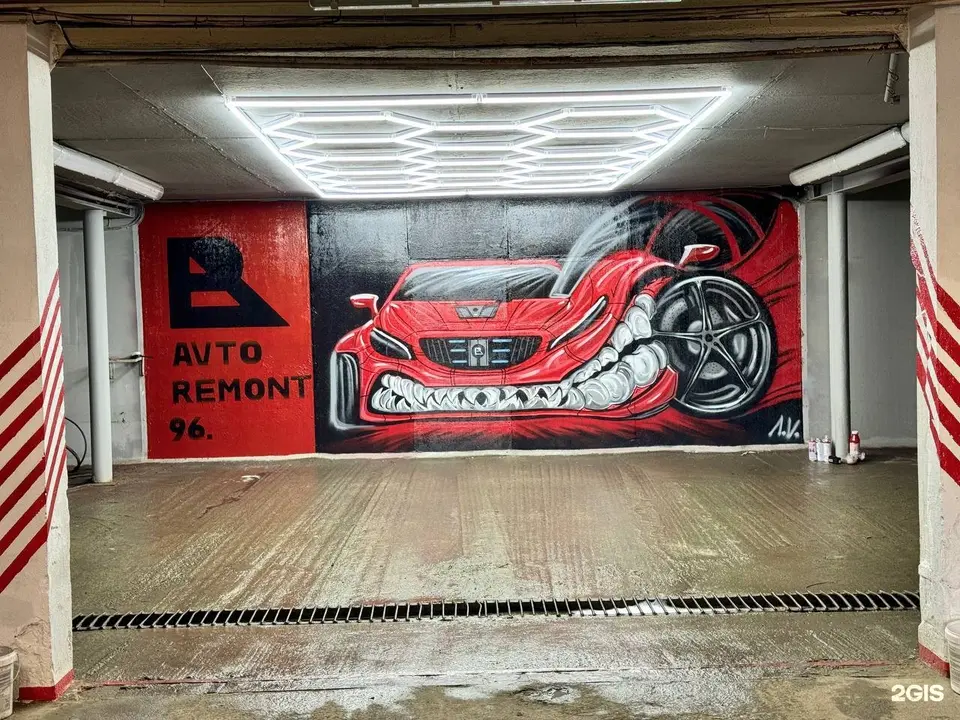
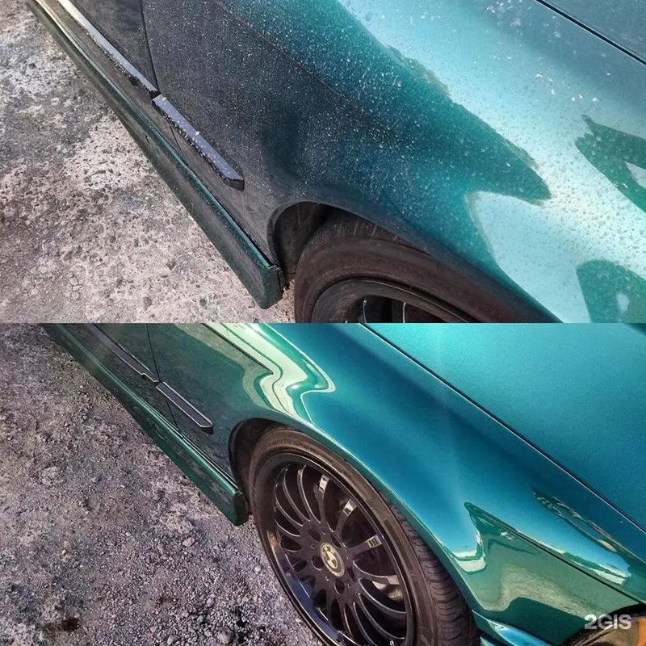
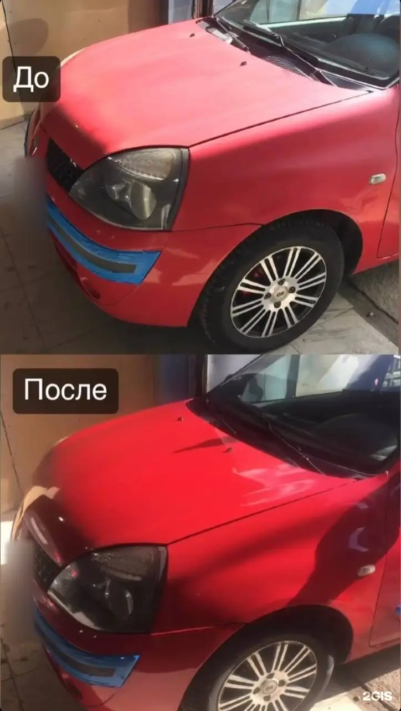
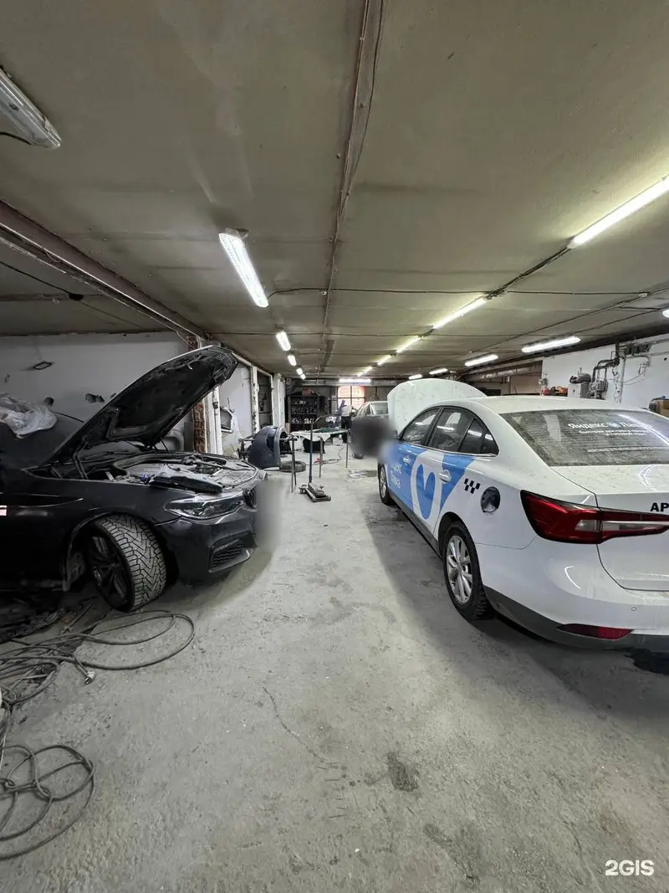
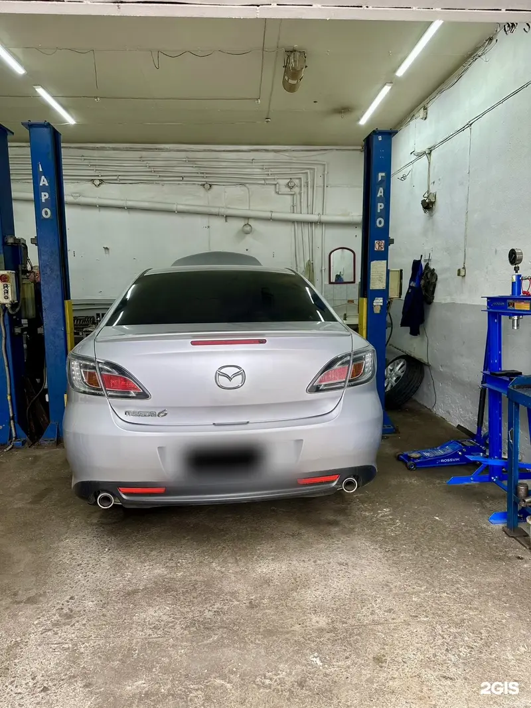
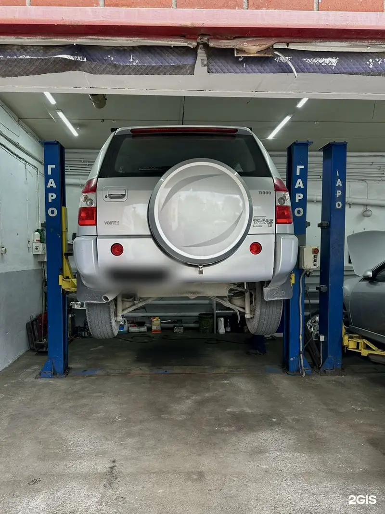
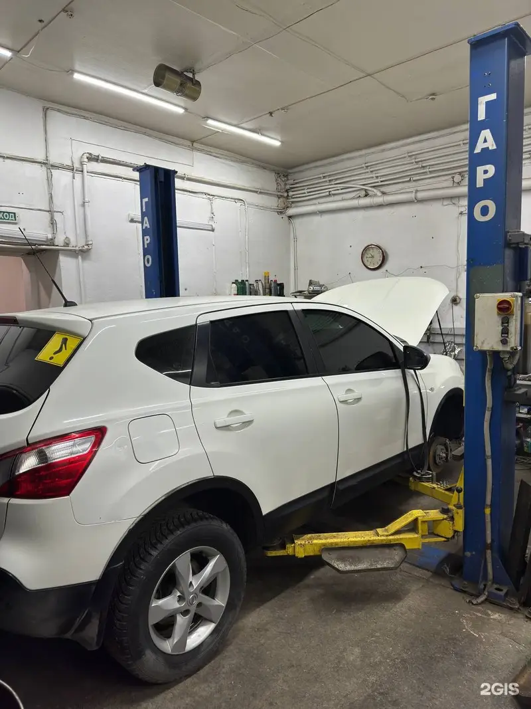
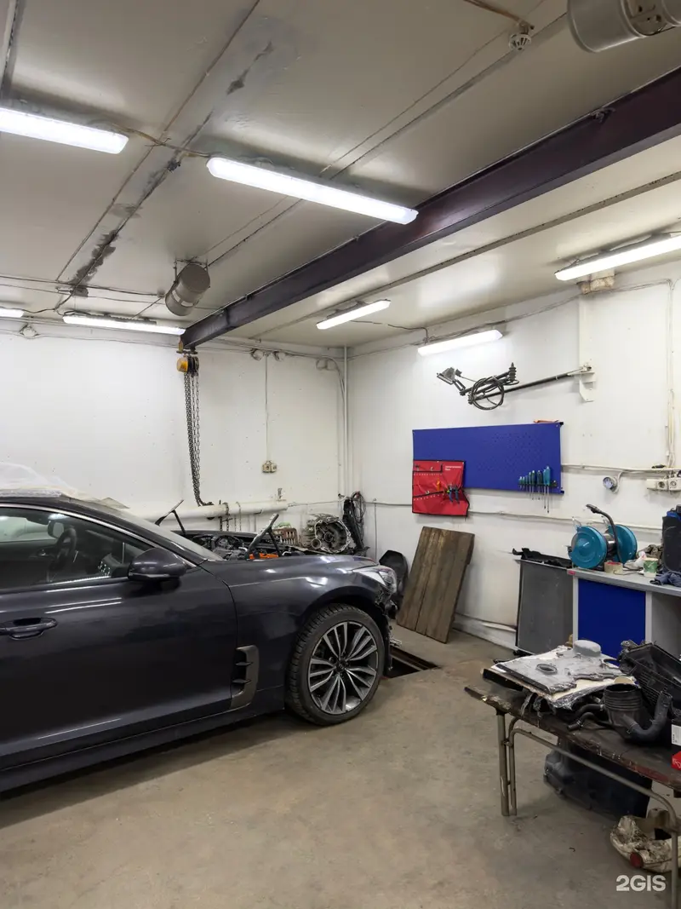

Запись
Приёмка и осмотр
Ремонт
Выдача
АвтоРемонт96Автосервис в Екатеринбурге
АвтоРемонт96 — техцентр полного спектра услуг! в самой удобной локации
Гск Юго-Западный, Волгоградская улица, 201, 1 этажПн–Чт 10:00–20:00, Пт–Вс 10:00–18:00

Что пишут клиенты
Мастер Станислав быстро устранил неисправность у бампера вследствие наезда на снежный ком на трассе. Быстро, профессионально, очень отзывчивый мастер, безмерно благодарна, что всё оперативно исправили!
Это лучший автосервис без преувеличения. Приехали сюда, чтобы поменять тормозные диски и ступицу, тк было подозрение на ее неисправность. Мастер сразу сказал, что дело скорее все не в ней и сообщил, что все проверит и не будет менять если все хорошо. Так и получилось, дело было не в ступице. Также мастер все объяснил по эксплуатации автомобиля после замены дисков, дабы я по своей неопытности не устроила ДТП) Спасибо мастеру за честность и профессионализм. Бывала в разных автосервисах, но такой подход увидела впервые. Теперь я точно только Ваш клиент)
Обращалась в Авторемонт96 — осталась очень довольна! 😊 Ребята действительно молодцы, всё сделали быстро и качественно, без лишних ожиданий и проблем. Очень приятное отношение к клиентам — все добрые, отзывчивые, всё объясняют и помогают. Понравилось, что у сервиса большой спектр услуг, можно решить сразу несколько вопросов в одном месте. Спасибо вам за хорошую работу! Теперь буду обращаться сюда и рекомендовать знакомым ❤️🚗
Спасибо Стасу и Дмитрию за отличную покраску машины и адекватную стоимость. Рекомендую.
Быстро и качественно поменяли колёса!
Сервис понравился, не отказали, когда помощь нужна была срочно, спасибо ребятам
Примеры работ
- Открыть фото: Фото 1 из 7. Зелёное крыло до и после: сверху мутный лак в каплях, снизу глянец

- Открыть фото: Фото 2 из 7. Красный автомобиль с подписями «До» и «После»: передний бампер и крыло

- Открыть фото: Фото 3 из 7. Цех АвтоРемонт96: несколько машин в работе, у BMW открыт капот

- Открыть фото: Фото 4 из 7. Mazda 6 в боксе между стойками подъёмника

- Открыть фото: Фото 5 из 7. Внедорожник поднят на подъёмнике, вид сзади

- Открыть фото: Фото 6 из 7. Белый кроссовер на подъёмнике, переднее колесо снято

- Открыть фото: Фото 7 из 7. Тёмный седан без переднего бампера в цеху, рядом верстак с деталями

Возьмёте мою машину?
Что делаем
- Легковой автосервис
- Кузовной ремонт
- Сварочные работы
- Детейлинг
- Развал-схождение
- Шиномонтаж
- Компьютерная диагностика автомобилей
- Замена масла
- Ремонт АКПП
- Ремонт МКПП
- Ремонт ходовой части автомобиля
- Хранение шин
Виды работ: предрейсовый техосмотр, ремонт выхлопной системы, ремонт тормозной системы, ремонт пластиковых бамперов, ремонт АКПП, ремонт двигателя, полное сервисное обслуживание, замена масла, покраска автомобиля, ремонт ходовой части, ремонт стартеров, компьютерная диагностика автомобиля, ремонт рулевых реек, чистка форсунок, ремонт КПП, ремонт генераторов, полировка, ремонт форсунок, ремонт карданных валов, ремонт топливной системы, ремонт карбюраторов, ремонт авторадиаторов, ремонт ГБЦ, ремонт фар, ремонт амортизаторов, ремонт РКПП, ремонт моста, ремонт сцепления, ремонт автономных отопителей, запчасти и комплектующие под заказ, замена ГРМ, ремонт турбокомпрессора, ремонт DSG, эндоскопия двигателя, раскоксовка, ремонт катализаторов, проточка тормозных дисков, ремонт гидроусилителя руля, ремонт системы охлаждения, ремонт рулевого редуктора, ремонт шаровых опор
Сколько стоит
СТО
6
- Техническое обслуживание автоот 1 000 ₽
- Ремонт подвескиот 1 000 ₽
- Ремонт тормозной системыот 1 000 ₽
- Замена технических жидкостейот 500 ₽
- Установка доп. оборудованияот 1 000 ₽
- Шиномонтажот 1 000 ₽
Кузовной
1
- Сварочные работы1 000 ₽
Хранение колес, дисков
1
- Хранение колес, дисковот 400 ₽
Когда цена может измениться
Прайс в 2ГИС: «Обновлено 23 октября 2024». Информация о ценах не является публичной офертой.
Как проходит визит
Гарантия и документы
- Ещё
- ТО автомобилей всех марок и моделей специалисты нашего автосервиса выполняют на профессиональном уровне с предоставлением гарантии качества и по выгодной цене
Пока машина в ремонте
Оплата
Оплата картой, наличный расчёт, оплата через банк, перевод с карты, оплата по QR-коду.
Парковка
Парковка, в том числе для людей с инвалидностью.
Доступная среда
Вход доступен на инвалидной коляске.
Туалет
Туалет — отмечен в карточке Яндекс Карт.
Подарочный сертификат
Подарочный сертификат — отмечен в карточке Яндекс Карт.
Можно с собакой
Можно с собакой — отмечено в карточке Яндекс Карт.
Частые вопросы
Какой ремонт делаете?
Направления: ремонт двигателя, трансмиссии, тормозной системы, подвески, системы охлаждения, а так же ремонт электропроводки и в том числе установка доп. оборудования
Что входит в диагностику?
Выполняем от проверки уровня жидкостей и состояния подвески до диагностики углов установки колес и проверки состояния шин и дисков.
Что входит в кузовной ремонт?
Восстановление геометрии, покраска, полировка, ремонт вмятин, сварка.
Что делаете по ходовой?
Ремонт стоек, проточка тормозных дисков.
Что делаете на шиномонтаже?
Покраска дисков, замена колодок, сварка дисков, ремонт порезов.
Есть мойка?
Мойка кузова и салона, химчистка салона.
Как доехать
Телефоны
Мессенджеры
Гск Юго-Западный, Волгоградская улица, 201, 1 этаж
- Адрес
- Гск Юго-Западный, Волгоградская улица, 201, 1 этажЮго-Западный м-н, Верх-Исетский район
- Как найти вход
- рядом с ТРЦ Радуга Парк
- Транспорт
- ост. «Ухтомская», 240 м
- Телефоны
- +7 912 273-23-49
Часы работы
| Понедельник | 10:00–20:00 |
|---|---|
| Вторник | 10:00–20:00 |
| Среда | 10:00–20:00 |
| Четверг | 10:00–20:00 |
| Пятница | 10:00–18:00 |
| Суббота | 10:00–18:00 |
| Воскресенье | 10:00–18:00 |
Показать карту
Карта загрузится с сервиса Яндекс Карты